Tutorials › Beginner
Your first hour
with Brainstead.
Follow one small, real-life job from start to finish, and learn the app as you go. No experience needed.
I'm using a
The steps and keys below follow your choice.
The story
You work at Acme, and the lease on your team's office ends in six weeks. Your manager, Sam, has asked you to organise the move to a new office and send a short proposal by Friday.
It's the kind of job that lives in your head, on sticky notes and in a dozen emails. By the end of this tutorial it will all be in one place, and you'll have a polished PDF to send Sam.
- A projectfor the office move
- Meeting noteslinked to it
- A task listwith due dates
- A proposalwith pictures, as a PDF
Install Brainstead.
Brainstead is free, needs no account and runs on your own computer. Installing it takes a couple of minutes.
- Download Brainstead for Mac. You need a Mac with Apple silicon (M1 or later) and macOS 14 or later.
- Open the downloaded file and drag Brainstead onto Applications.
- Open Brainstead from Applications. macOS says it can't check the app, because it isn't notarised by Apple. Click Done.
- Open System Settings › Privacy & Security, scroll down and click Open Anyway. From now on it opens normally.
- Brainstead asks for Full Disk Access, so it can read your notes wherever they are. Follow its instructions, or click Continue without it.
- Download Brainstead for Windows. You need Windows 10 or 11 (64-bit).
- Run the installer. It installs just for you, with no administrator password.
- If Windows says it protected your PC, click More info, then Run anyway. (The app isn't code-signed.)
- Open Brainstead from the Start menu.
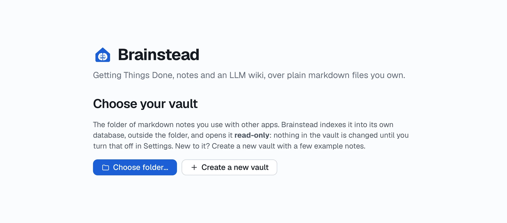
Make your vault.
Your vault is simply a folder on your computer where Brainstead keeps your notes. Each note is an ordinary text file, so your work is never locked inside the app.
- On the welcome screen, click Create a new vault.
- Give it a name, such as My notes, and choose where to keep it. Your Documents folder is a good place.
- Brainstead makes the folder, fills it with a few example notes and opens on Today, your home screen.
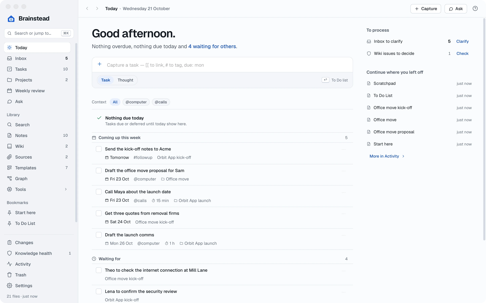
Already keep notes in a folder? Click Choose folder… instead. Brainstead opens it read-only, so nothing changes until you turn Read-only off in Settings › Vault. A vault Brainstead makes for you is ready to write in straight away.
Lost? Press ? on any screen for help with it, or open the example note Start here for a tour.
Write your first notes.
Start with a note for the office move itself, then one for the kick-off meeting you had with Sam, Lena from facilities and Theo from IT.
A project note
- Press ⌘N (or click New note on the Notes screen) and choose Blank note.
- For Type enter Project, and for Title enter Office move. Clear the date: a project isn't tied to one day. Click Create.
- The note opens, ready to write in. Type a line about what the project is for:
Our lease at Harbour Street ends on 30 November, so the team is moving to a new office.
- Press ⌘S to save.
A meeting note, from a template
- Press ⌘N again, and this time pick the Meeting template.
- When it asks what the meeting is about, type Office move kick-off and click Create. The note arrives with Attendees, Notes and Actions headings, and today's date in its name.
- Fill in who was there and what you discussed. Use the toolbar for bold, headings and lists, just as in a word processor.
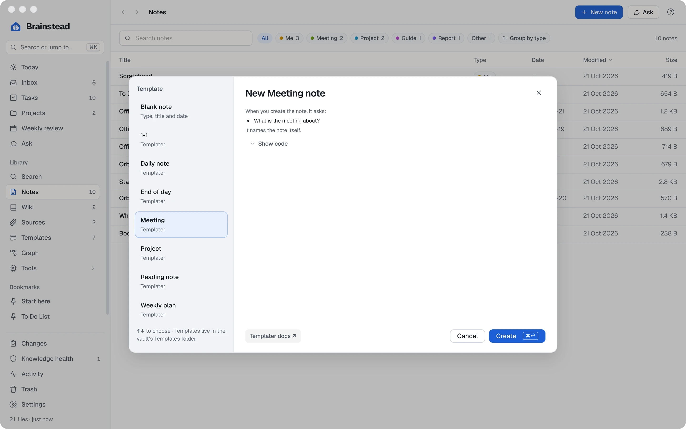
View and Edit. The switch at the top of a note moves between View, for reading, and Edit, for writing. Brainstead saves only when you press ⌘S, and keeps a draft as you type, so nothing is lost if you forget.
Link notes together.
Links turn separate notes into a web you can click through. Link the meeting to the project, and each note will show the other.
- In the meeting note, under Notes, start a line and type two square brackets: [[
- A list of your notes appears. Type office, choose Project. Office move and press ↩.
This is all part of the [[Project. Office move|Office move]].
- Save, then ⌘-click the link (or click it in View) to jump to the project.
- Look at the panel on the right of the project: under Linked from is your meeting note, with the line that links to it. You never have to link both ways.
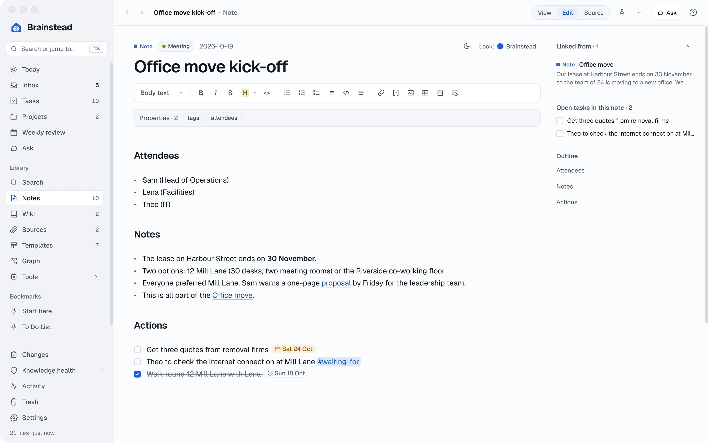
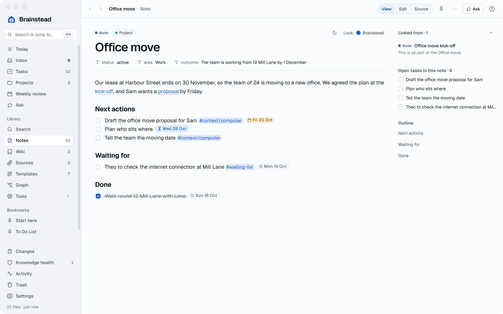
Shorter link text. Everything after the | is what the reader sees, so [[Project. Office move|Office move]] reads simply as Office move.
Add tasks to a note.
In Brainstead, a task is just a line in a note with a box in front of it. Write your actions where they came up, and Brainstead gathers them all onto one list for you.
- In the meeting note, under Actions, type a dash, a space and a pair of square brackets with a space between, then the task. (Or click the task-list button on the toolbar.)
- [ ] Get three quotes from removal firms
- To give it a due date, type due: at the end of the line and pick a day from the calendar that pops up. It's shown as a small calendar icon and the date.
- Add a task you're waiting on someone else for, with the #waiting-for tag:
- [ ] Theo to check the internet connection at Mill Lane #waiting-for
- Save, then open Tasks in the sidebar. Your new tasks are there with every other task in the vault, sorted by when they're due.
- Done one? Tick its box, here or in the note. The note is updated to match.
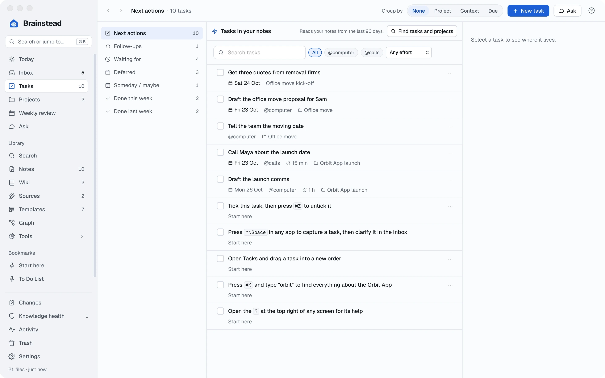
Capture on the go.
You're in the middle of an email when you remember you need Lena's floor plan. Don't switch apps: catch it in two seconds and get back to what you were doing.
- From any app, press ⌃⌥Space. A small capture box appears.
- Type the task and press ↩:
Ask Lena for the Mill Lane floor plan
- Had an idea rather than a to-do? Open the box again, press Tab to switch to Thought, and type it:
Could we ask the landlord for the first month rent-free?
- Later, open the Inbox in the sidebar. Everything you captured waits there until you decide what it is: a task for the project, a note, or nothing at all.
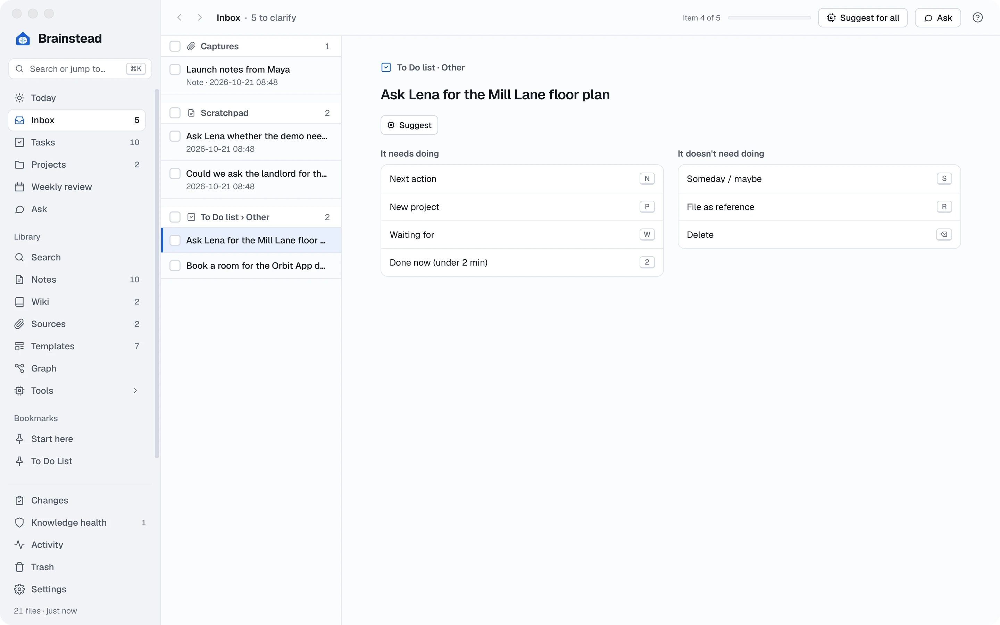
Shortcuts as you type. In the capture box, due: fri sets a due date and @calls marks a task as a phone call, so Call the removal firm due: fri @calls is a complete task.
Write the proposal.
Now for the document Sam asked for: a clear, professional proposal with a table of options, a floor plan and a timeline.
- Press ⌘N, choose Blank note, and enter Report as the Type and Office move proposal as the Title. Keep today's date.
- Give it structure with headings: choose Heading 2 from the style menu at the left of the toolbar (it says Body text) for Summary, The options, The new floor, Timeline and Next steps. The note's name is already its title.
- Compare the two offices side by side: click the table button on the toolbar and fill it in.
- Add the floor plan: drag the picture from your desktop or an email into the note, or copy it and paste it with ⌘V. Brainstead saves a copy in your vault's images folder and places it where your cursor is.
- Too big? Point at the picture and drag a corner to resize it.
- Under the picture, add a short caption in italics (⌘I), then add the timeline the same way.
- Link the proposal from the project note, as you did in step 4, and save.
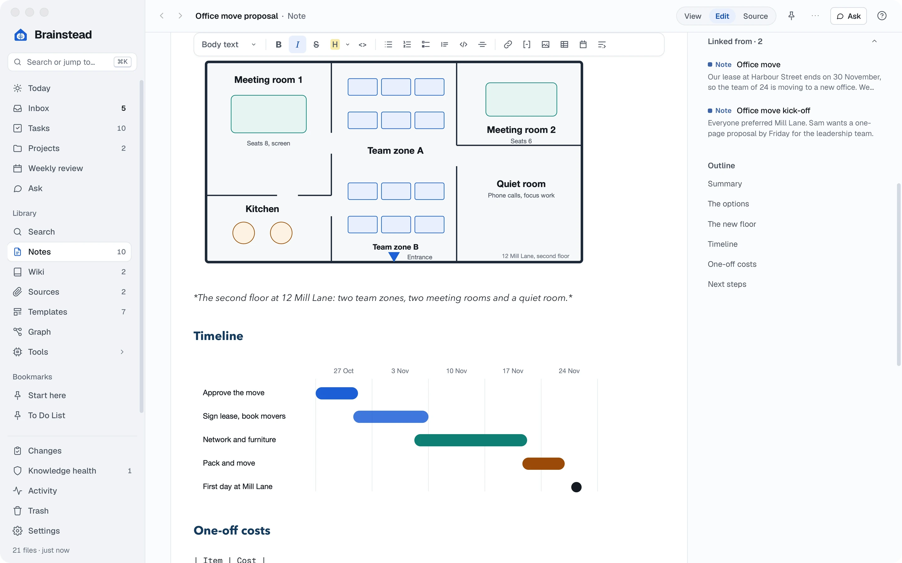
Make a risk stand out. Start a line with > [!warning] and a title, and View draws it as a coloured box. Handy for the one thing Sam mustn't miss.
Change the look.
The same words can look plain or polished. Brainstead has seven themes for documents, each with a choice of colours, and you can give one note its own look.
- Switch the proposal to View.
- At the top right of the page, click the Look: button.
- Pick a theme. Point at each to read what it's like; Business gives coloured headings and banded tables, just right for a proposal.
- Pick a colour from the swatches. Dark blue looks smart for work.
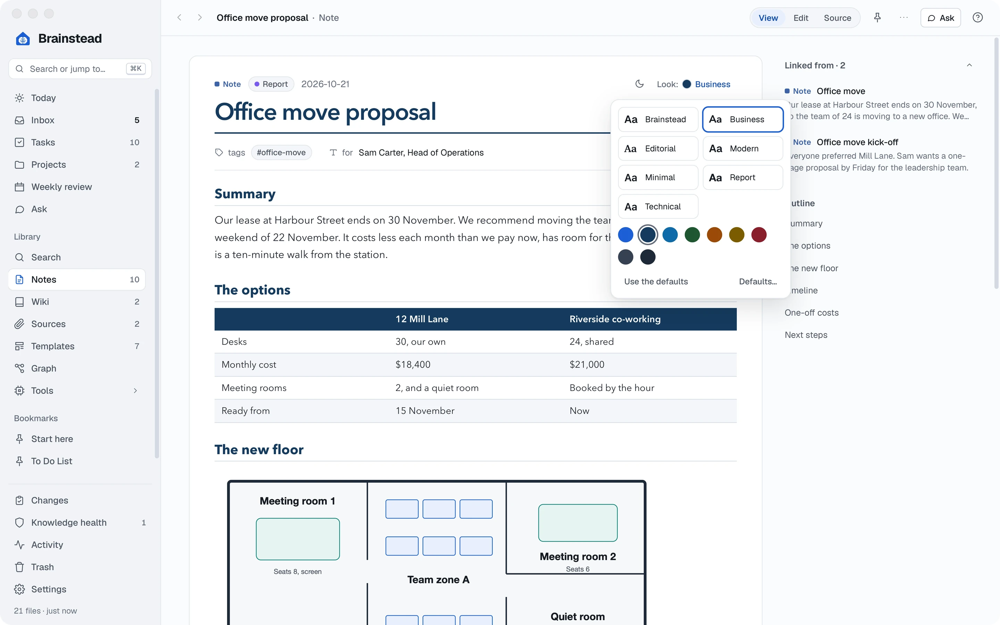
Like it everywhere? Set the look for every note in Settings › Notes › Document look. A note you've styled on its own keeps its look.
Export a PDF.
Last step: turn the proposal into a PDF you can attach to an email to Sam.
- With the proposal open, click the ⋯ button at the top right.
- Choose Export PDF… (or just press ⌘P).
- Choose where to save it, and click Save.
The PDF keeps your theme, colours and pictures, and puts the title and page numbers in the footer. Attach it to your email, and you're done.
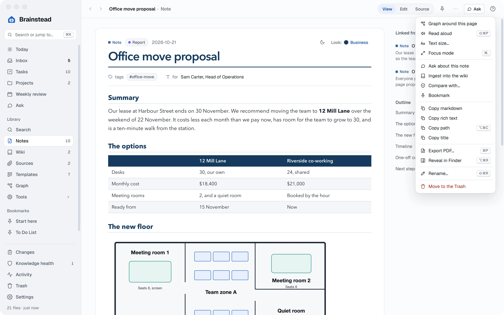
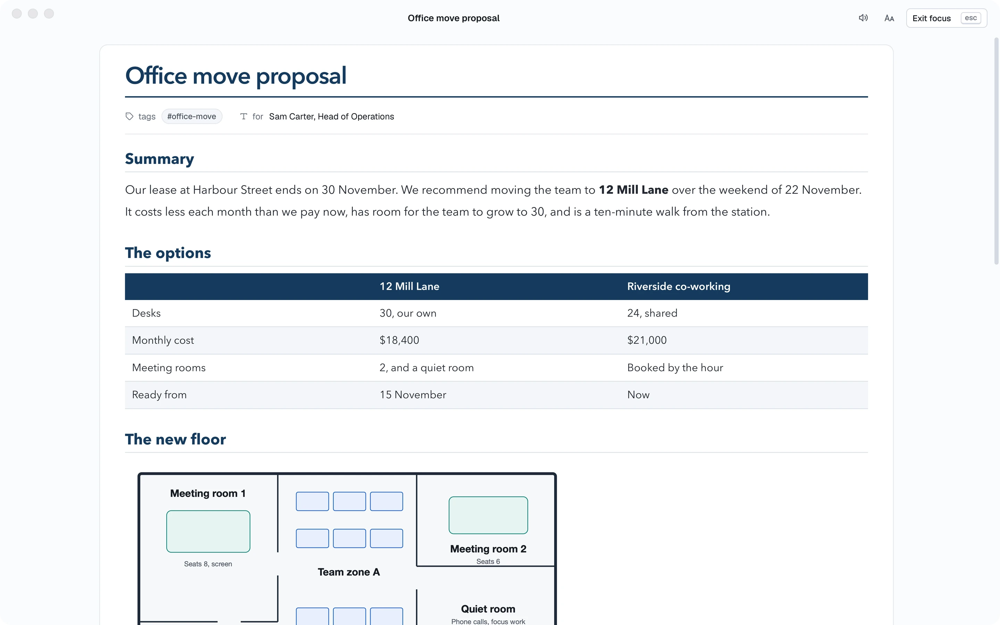
Rather paste it into an email? Choose Copy rich text on the same menu, and paste: headings, tables and formatting come with it.
You did it.
The office move is out of your head and into one place, and Sam has the proposal. Along the way, you learned to:
- Install Brainstead and make a vault
- Write notes, blank or from a template
- Link notes with
[[ - Add tasks with due dates
- Capture tasks and thoughts from anywhere
- Write a document with tables and pictures
- Give it a professional look
- Export it as a PDF